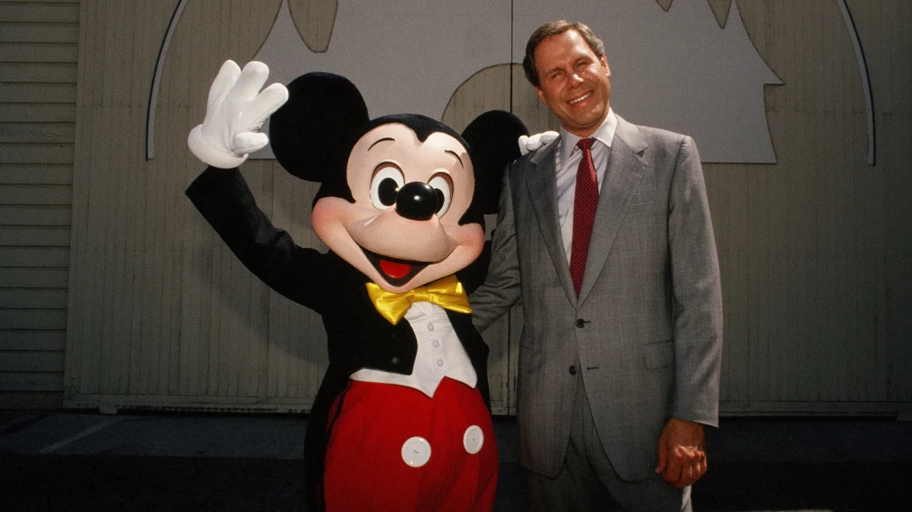
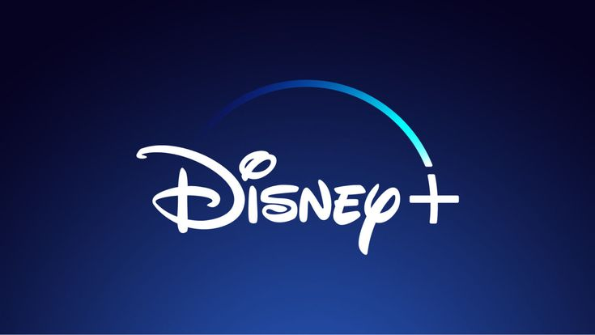

1923
Disney Studio Opening

Walt Disney and Roy O. Disney start the Disney Brothers Studio
1928
Mickey Mouse Debuts

Mickey Mouse appears in Steamboat Willie, launching Disney’s global recognition
1937
First Animation

Snow White and the Seven Dwarfs sets the standard for animated movies
1950
Treasure Island

Treasure Island marks Disney’s move beyond animation.
1955
Disneyland Opening

Disneyland Park transforms entertainment with immersive theme parks
1966
Walt Disney's Death
.jpeg)
Marks a major leadership transition and uncertainty for the company’s future
1971
Walt Disney World's Sucsess

Walt Disney World Resort becomes Disney’s largest resort and a global destination
1984
Michael Eisner Becomes CEO

Michael Eisner leads a major revival and expansion era
1989-1994
The Disney Renaissance

Hit films like The Lion King revive Disney animation’s dominance
2006-2012
The Major Acquisitions
Disney buys 21st Century Fox, Pixar, Marvel Entertainment and such securing huge franchises
2019
Disney+ Launch

Disney+ marks Disney’s shift into the streaming era